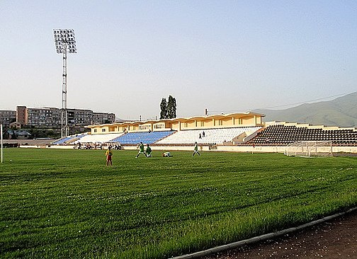

Կոտայքի մարզ, մարզի կարգավիճակ ունեցող վարչատարածքային միավոր Հայաստանի կենտրոնական հատվածում։ Մարզի տարածքն ընդգրկում է Կոտայքի սարավանդը, Մարմարիկ գետի ավազանը, Հրազդան գետի ավազանի վերին ու միջին հատվածը, ինչպես նաև Գեղամա լեռնաշղթայի արևմտյան լանջերը[1]։ Այն հարավ-արևմուտքից սահմանակից է մայրաքաղաք Երևանին, արևմուտքից՝ Արագածոտնի, հյուսիսից՝ Լոռու, հյուսիս-արևելքից՝ Տավուշի, արևելքից՝ Գեղարքունիքի և հարավից՝ Արարատի մարզերին[1]։ Հայաստանի միակ մարզն է, որը չի սահմանակցում հարևան որևէ պետության հետ։ Միևնույն ժամանակ, Կոտայքը չորս մարզերից մեկն է, որոնք անմիջապես հարում են Երևանին[2]։ Կոտայքի վարչական կենտրոնը Հրազդանն է, խոշորագույն քաղաքը՝ Աբովյանը։ Մարզը զբաղեցնում է 2089 կմ² տարածք՝ 8-րդը Հայաստանի մարզերի շարքում։ Ըստ 2023 թվականի տվյալների վիճակագրական տվյալների՝ Կոտայքի մարզի բնակչությունը կազմում է 254 600 մարդ[3]։ Ներառում է 42 համայնքներ, այդ թվում՝ 7 քաղաքային և 35 գյուղական։ Խոշորագույն համայնքներն են Աբովյան, Հրազդան, Չարենցավան, Բյուրեղավան, Նաիրի և Նոր Հաճըն միավորները։ Կոտայքի արևմտյան մասը պատմականորեն ներառված է եղել Մեծ Հայքի Այրարատ նահանգի Կոտայք, իսկ արևելյանը՝ Մազազ գավառների կազմում[4]։ Ներկայիս վարչատարածքային միավորը ձևավորվել է Աբովյանի, Հրազդանի և Նաիրիի շրջանների միավորման հետևանքով[5]։ Կոտայքի մարզը Հանրապետության տնտեսական խոշորագույն կենտրոններից է։ Հրազդանում գործում է ջերմաէլեկտրակայան[6] և ջրաէլեկտրակայան[7], որոնք բավարարում են Հայաստանի էներգետիկ պահանջների մի մասը[6]։ Մարմարիկ գետի ձախ ափին գտնվող Մեղրաձոր գյուղում պահվում են զգալի ոսկու պաշարներ։ Ծաղկաձոր քաղաքը Հայաստանի լեռնադահուկային սպորտի կենտրոնն է, որն ունի կարևոր զբոսաշրջային նշանակություն[8][9]։ Մարզի տարածքը հարուստ է նաև պատմամշակութային հուշարձաններով։ Դրանց մարգարիտը Գառնու հեթանոսական տաճարն է, որը կառուցվել է 1-ին դարում և համարվում է նախաքրիստոնեական շրջանի հայոց պատմության եզակի մարգարիտներից մեկը։ Նշանավոր են նաև Բջնի բերդը, միջնադարյան Կեչառիսի վանքային համալիրը և Գեղարդավանքը։
Անվան ծագումնաբանություն
Ըստ ընդունված վարկածի՝ Կոտայք անվանումը կապված է Մեծ Հայքի Արշակունի թագավոր Խոսրով Կոտակի անվան հետ[10]։ Մեկ այլ վարկածի համաձայն «Կոտայք» անվանումը կապված է հինաշխարհյան նույնանուն ցեղանվան՝ Վանի թագավորության սեպագիր արձանագրություններում հիշատակվող Էթիունի երկրի անվան հետ։ Ղևոնդ Ալիշանը հնարավոր է համարում, որ հույն նշանավոր աշխարհագրագետ Կլավդիոս Պտղոմեոսի հիշատակած Կոտակենե գավառը նույն Կոտայքն է։ Որոշ աղբյուրներ փաստում են, որ Կոտայքի անվանումը կապված է միջնադարյան Հայաստանում ապրող մի իշխանի անվան հետ, որոշներն էլ այն պայմանավորում Գեղարքունիք գավառի Կոթ կամ Կոթաքար գյուղաքաղաքի անվանով, իբրև Կոթա փոխադրվածների կամ Կոթայեցիքի գավառ։ Կոտայքի մասին տեղեկություններ են պահպանվել Անանիա Շիրակացու «Աշխարհացոյց»-ում և մատենագիրների երկերում։ Հայ պատմիչներից առաջին հիշատակությունը Սեբեոսինն է (7-րդ դար)։ Արաբ պատմագիր Բալաձորին Կոտայքը հիշում է Կույտա ձևով։ Միքայել Չամչյանը, այլ սկզբնաղբյուրներից օգտվելով, Կոտայքն անվանում է Խատա կամ Խատայոց։
Պատմություն
Վաղ շրջան
Կոտայքի արևմտյան մասը հնում մտնում էր Այրարատ նահանգի Կոտայք, իսկ արևելյանը՝ Մազազ գավառների կազմի մեջ[4]։ Կոտայք գավառի մասին տեղեկություններ պահպանվել են 7-րդ դարի «Աշխարհացույց»-ում և հայ մատենագիրներ Սեբեոսի, Թովմա Արծրունու, Ասողիկի, Կիրակոս Գանձակեցու, Ստեփանոս Օրբելյանի և Զաքարիա Քանաքեռցու աշխատություններում, հայկական հին ձեռագրերում և հիշատակարաններում[11]։ Նրա անցյալի պատմական և մշակութային կյանքի վկայություններն են Կոտայքում պահպանված բազմաթիվ հուշարձանները[12]։ Ըստ հնագույն վկայությունների՝ Կոտայքի ներկայիս տարածքը բնակեցված է եղել դեռևս հազարավոր տարիներ առաջ[13]։ Հրազդան բնակավայրի շրջակայքում հայտնաբերվել են մ.թ.ա. 2-1-ին հազարամյակների դամբարանադաշտեր և մ.թ.ա. 13-րդ դարի քարավանատուն։ Վաղ ժամանակներում մարզի ներկայիս տարածքում և հարակից շրջաններում ապրող ուրարտացիները կարողացան միավորել տեղի ցեղախմբերին և ստեղծել Վանի թագավորությունը, որի մեջ էլ մտնում է Կոտայքի տարածքը։ Ըստ Վանի թագավորության արձանագրությունների՝ մարզի ներկայիս տարածքն ընդգրկվում էր Էթիունի խոշոր ցեղային միության տիրապետության մեջ։ Աբովյան քաղաքի տարածքում հայտնաբերվել է Արգիշտի I թագավորի (մ.թ.ա. 8-րդ դար) սեպագիր արձանագրությունը[14]։ Քաղաքի հարավային մասում կա մ.թ.ա. 2-1-ին հազարամյակի կիկլոպյան ամրոց, բնակատեղի և դամբարաններ։ Կոտայքի մարզի ներկայիս տարածքը եղել է հին հայերի հեթանոսության գլխավոր կենտրոններից մեկը։ Այստեղ է գտնվում Հայաստանի տարածքում մինչ օրս պահպանված միակ հեթանոսական կառույցը՝ Գառնու տաճարը[15][16], որը նվիրված է հին հայկական դիցարանի արևի աստված Միհրին։
.jpg)
1-ին դարին թվագրվող Գառնու հեթանոսական տաճարը Կոտայքի մարզի նույնանուն բնակավայրի տարածքում։
Միջնադար
Վաղ միջնադարում (3-5-րդ դարեր) այս հողերը պատկանել են հայոց թագավորի կալվածքները տնօրինող Վարաժնունիների տոհմին։ 5-րդ դարում հովիտն անցավ հայկական ազդեցիկ Կամսարական տոհմի տիրապետության տակ, որը սերվել էր Իրանի 7 մեծագույն տներից մեկի՝ Կարենյաններ-Պահլավունիներից։ Կամսարական տոհմի հետնորդ, Պահլավունի տոհմի առաջնորդ Գրիգոր Մագիստրոսը 1033 թվականին հրամայեց Ծաղկաձոր ավանում կառուցել եկեղեցի, որը կոչեցին Գրիգոր Լուսավորիչի անունով։ Արդյունքում՝ հիմնվեց Կեչառիս վանական համալիրը[17]։ Արշակունիների ժամանակ Կոտայքը պատկանում էր հայոց արքունիքին, իսկ 5-7-րդ դարերում, ըստ որոշ տվյալների՝ Ամատունյաց նախարարական տանը։ Կոտայքի տարածքը կռվախնձոր է եղել Ամատունինեչօ և հայոց իշխան Գրիգոր Ա Մամիկոնյանի միջև։ Ըստ Հայոց կաթողիկոս և պատմիչ Հովհաննես Դրասխանակերտցու գրառումների՝ Արամոնս գյուղը եղել է հայոց կաթողիկոսական կալված։ 9-10-րդ դարերում պատկանել է Բագրատունիների թագավորությանը, իսկ 10-րդ դարի վերջում գավառը նվիրվել է Պահլավունիներ իշխանական տոհմին։ Հետագայում՝ 12-13-րդ դարերում տարածքը եղել է Զաքարյանների իշխանության տակ և պատկանել է Իվանե Զաքարյանին, ինչպես նաև նրան ենթակա հայ իշխաններին։ 13-15-րդ դարերում վերջինիս մի մասն անցել է Պռոշյանների և Խաղբակյանների ենթակայության տակ։ 1253 թվականին ներկայիս մարզի տարածքի մի մասը Մանգու Խանը շնորհել է իշխան Սմբատ Օրբելյանին՝ թուրք սելջուկների և թաթար մոնղոլների տիրապետության շրջանում։
Նոր և նորագույն ժամանակներ
Տարածքի հետագա տիրապետողների թվում եղել են ակ-կոյունլու, կարա-կոյունլու ցեղախմբերը, Սեֆյան Պարսկաստանը, իսկ 18-րդ դարի կեսերին Կոտայքը ձևավորել է Երևանի խանության Կարբի-Բասարի և Կըրխբուլաղ մահալները։ Այս տարածքը նույնպես ենթարկվել է Շահ Աբասի իրականացրած բռնագաղթին, ինչի հետևանքով բնակիչները լքել են այն։ 1828-1829 թվականներին Արևելյան Հայաստանում Ռուսաստանի տիրապետության հաստատումից հետո այն մտել է Կոտայք գավառի մեջ[18]։ Թուրք-պարսկական տիրապետության օրոք բաժանված էր Երևանի խանության Կըրխ-Բուլաղի և Գսանի-Բասարի մահալների միջև[19]։ Արևելյան Հայաստանը վերջնականապես Ռուսաստանին միացվելուց և Երևանի նահանգը կազմվելուց հետո (1849) Կոտայքը մտավ այդ նահանգի մեջ։ Բնակչությունը հիմնականում զբաղվում էր երկրագործությամբ, անասնապահությամբ, այգեգործությամբ։ Շրջանում չկային արդյունաբերական քաղաքներ[19]։ Գյուղերը փոքր էին և անբարեկարգ։ Միջնադարյան Սուրբ Աստվածածին եկեղեցին Եղվարդ քաղաքում։ 1918 թվականին Կոտայքը ներառվում է Հայաստանի առաջին հանրապետության Այրարատյան նահանգի կազմում, սակայն 1920 թվականի ռուս-թուրքական համատեղ ագրեսիայի արդյունքում բռնազավթվում է Խորհրդային Ռուսաստանի կողմից։ Խորհրդային կարգերի հաստատումից հետո Խորհրդային իշխանության առաջին տարիներին՝ մինչև 1925 թվականի հոկտեմբերի 20-ը, Կոտայքը որպես գավառակ մտել է Երևանի գավառի մեջ, այնուհետև դարձել առանձին շրջան։ Ավելի ուշ մարզի տարածքում ձևավորվում են Հրազդանի, Նաիրիի և Աբովյանի շրջանները։ Երկրորդ համաշխարհային պատերազմի տարիներին՝ 1941-1945 թվականներին, Նաիրիի, Աբովյանի և Հրազդանի շրջաններից ԽՍՀՄ-ի բանակ է զորակոչվում 7350 հոգի։ ԽՍՀՄ շքանշաններով ու մեդալներով է պարգևատրվում 4735 մարդ։ Նրանցից երկուսը՝ Հրանտ Բաբայանը և Սերգեյ Սարխոշևը, արժանանում են Խորհրդային Միության հերոսի կոչման, իսկ Իվան Միրզոևը դառնում Փառքի շքանշանի երեք աստիճանների ասպետ։ Պատերազմի ժամանակահատվածում Կոտայքում կառուցվում է Գառնիի ջրանցքը[20], որն Ազատ գետի ջրով ոռոգում է 800 հա հող։ 1945 թվականին շահագործման հանձնվում Գառնիի էլեկտրակայանը, այնուհետև նաև Քանաքեռի ջրհան կայանը։ Ետպատերազմյան տարիներին զգալի փոփոխություններ են տեղի ունենում Կոտայքի տնտեսության կառուցվածքում․ աննախընթաց չափով աճում է արդյունաբերության տեսակարար կշիռը շրջանի տնտեսության ընդհանուր հաշվեկշռում։ Արդյունաբերական ձեռնարկությունների հետ մեկտեղ շրջանում հայտնվում են նոր բնակավայրեր՝ Նոր Հաճն և Արզնի ավանները։ 1958 թվականին շրջկենտրոններ Քանաքեռ և Ավան գյուղերը միացվում են Երևանին[21]։ 1991 թվականին՝ Խորհրդային միության անկման արդյունքում, Կոտայքի ներկայիս տարածքը դառնում է Հայաստանի Հանրապետության մաս։ 1995 թվականին ընդունված «Վարչատարածքային բաժանման» մասին օրենքի համաձայն ստեղծվում է ներկայիս Կոտայքի մարզը՝ Հրազդան կենտրոնով։
Աշխարհագրություն
Կոտայքը կենտրոնական դիրք է գրավում Հայաստանի տարածքում[22]։ Արևելքում սահմանակցում է Գեղարքունիքի մարզին, հյուսիսում և հյուսիս-արևելքում համապատասխանաբար Լոռու և Տավուշի մարզերին, հարավում սահմանակից է Արարատի մարզին և քաղաքամայր Երևանին, իսկ ամբողջ արևմուտքում՝ Արագածոտնի մարզին[22]։ Ամենաերկար սահմանագիծը Արագածոտնի մարզի հետ անցնող սահմանն է, իսկ ամենակարճը՝ Տավուշի մարզի սահմանը։
Լեռնագրություն
Կոտայքը գտնվում է Արարատյան գոգավորության նախալեռան հյուսիս-արևելքում՝ Հրազդան և Ազատ գետերի միջև, Կոտայքի սարավանդի վրա[22]։ Հյուսիս-արևելքում բարձրանում են Գեղամա լեռնաշղթան (Աժդահակ լեռ 3598 մ) և Ողջաբերդի լեռնաբազուկը, արևմուտքում ձգվում է Հրազդանի կիրճը, իսկ հարավում՝ Նորքի բարձրությունը։ Կոտայքի մարզի կենտրոնական հատվածում՝ Հրազդան գետի երկու ափերին, տարածվում են Կոտայքի և Եղվարդի թույլ մասնատված լավային սարավանդերը։ Կենտրոնական հատվածում են գտնվում Գութանասարի, Արայի և Հատիս լեռնագագաթները[4]։ Մարզի հարթավայրերն են` Եղվարդի հարթավայրը (գտնվում է ծովի մակերևույթից 1200-1300 մետր բարձրության վրա) և Հրազդանի սարահարթը (ծովի մակերևույթից` 1700-1800 մետր բարձրության վրա)։ Ամենաբարձր կետը Աժդահակ լեռն է՝ 3598 մետր բարձրությամբ։ Աժդահակ լեռը գտնվում է Կոտայքի և Գեղարքունիքի մարզերի սահմանագլխին։ Ռելիեֆը մեղմ ալիքավոր է, տեղ-տեղ բարձրանում են մնացորդային բլուրներ և խարամային կոներ։ Ծածկված է Գեղամա լեռնաշղթայի հրաբուխներից արտավիժած լավաներով ու տուֆերով, որոնք ընդարձակ աստիճաններով Ողջաբերդի լեռնաբազուկից ձգվում են դեպի Գետառի ալյուվիալ հովիտը։
Արտավազ լեռնագագաթը՝ Փամբակի լեռնաշղթայի հարավային լանջին, Արտավազ գյուղից 4 կմ հյուսիս-արևելքում։ Բարձրությունը կազմում է 2929 մետր։ Նշանավոր է իր գեղատեսիլ բարձրալեռնային տեսարաններով։
Թեք ու անտառազուրկ լանջերում շատ են հեղեղատներն ու փոքր հովիտները։ Շրջանի տարածքի մեծ մասում տեղանքի թեքությունները 8°-ից չեն անցնում, ուստի տնտեսական յուրացման համար համեմատաբար դյուրին են։ Կոտայքի մարզի հողաբուսական ծածկույթը բավականին խայտաբղետ է։ Գերակշռում են լեռնատափաստանային և լեռնաշագանակագույն, բարձրադիր վայրերում՝ ենթալպյան լեռնամարգագետնային, սևահողանման ու դարչնագույն հողերը։ Սարավանդներին բնորոշ են շագանակագույն հողերը և չոր տափաստանային լանդշաֆտները։ Լեռնալանջերին սևահողային ծածկույթի վրա ձևավորվել են լեռնային տափաստաններ։ Ծաղկունյաց լեռների և Մարմարիկի հովտի անտառների տակ տարածվում են գորշ դարչնագույն հողերը։ Բարձրադիր լեռնային գոտուն բնորոշ է լեռնամարգագետնային լանդշաֆտը։ Գետահովիտներում կուլտուրացված ոռոգվող հողեր են։ Բարձրադիր մասերում տարածված են խոտհարքներն ու ամառային արոտավայրերը։ Լավ են արտահայտված բնական լանդշաֆտային գոտիները։
Կոտայքի մարզի լեռնագագաթները
Սպիտակասար
բարձրությունը՝ 3555 մետր
Հատիս
բարձրությունը՝ 2528 մետր
Աժդահակ
բարձրություն՝ 3598 մետր
Գեղմաղան
բարձրություն՝ 3319 մետր
Ջրագրություն
Կոտայքի մարզն աչքի է ընկնում ներքին ջրերի առատությամբ։ Գետերից Հրազդանը[23], Գետառը, Ազատը ունեն ոռոգիչ նշանակություն։ Ակնա լճի (բարձրությունը՝ 3032 մետր) ջրերով ջրարմիացվում են ամառային արոտավայրերը։ Հրաբխային ապարների մեջ ներծծված ջրերն աղբյուրների տեսքով դուրս են գալիս լեռների ստորոտներում, ինչպես նաև Հրազդան և Ազատ գետերի կիրճերում[4]։ Հայտնի են Քառասունակնի, Գառնիի և Արզնու աղբյուրները, որոնց ջրերը հասնում են Երևանին և օգտագործվում կենցաղային և արդյունագործածական նկատառումներով[4]։ Կոտայքի մարզի քաղաքային և գյուղական բնակավայրերի տարածքներում կան տասնյակ լճեր, որոնց մի մասը չորանում է ամռանը։ Կոտայքի մարզի լճերը տնտեսական նշանակություն գրեթե չունեն։ Դրանք հիմնականում օգտագործվում են ոռոգման նպատակներով և ունեն տեղական նշանակություն։ Մարզի ջրամբարներն օգտագործվում են ոռոգման, էներգետիկայի, ձկնաբուծական և բուժական նկատառումներով։ Հայտնի են Մարմարիկի և Աղբյուրակի ջրամբարները[4]։ Կոտայքի մարզի ստորգետնյա ջրերի պաշարները բաշխված են անհամաչափ։ Ստորգետնյա ջրերը մեծ նշանակություն ունեն ջրային հավասարակշռության մեջ։ Կոտայքի մարզում կան նաև մի քանի ջրառատ ջրվեժներ։ Դրանցից ամենաջրառատն ու բարձրադիրը Գողթ գյուղում գտնվող Խոսրովի ջրվեժն է[24], որն ունի 8 մետր բարձրություն։ Ջրվեժն ունի զբոսաշրջային կարևոր նշանակություն։ Ճահիճների թիվը բավականին քիչ է։ Տարեց տարի դրանց քանակն էլ ավելի է կրճատվում։
Կլիմա
Կիման ըստ բարձրության փոխվում է տաք չոր ցամաքայինից մինչև ձյունամերձը։ Օդի տարեկան միջին ջերմաստիճանը տատանվում է 10 °C-ից մինչև 2.5 °C: Տարվա ամենատաք ամիսը հուլիսն է, իսկ ամենացուրտը՝ հունվարը։ Կոտայքի մարզի ցածրադիր շրջաններում միջին հունվարյան ջերմաստիճանը կազմում է 4.5-5 °C: Բարձրադիր շրջաններում հունվարյան ջերմաստիճանը նվազում է մեկ և ավելի ջերմաստիճանով՝ -3.6 °C: Կոտայքի մարզի բարձրադիր շրջաններում ամառվա ամենատաք ամսին գրանցվում է միջինում 8.7 °C ջերմություն։ Ցածրադիր շրջանների եղանակային պայմանները բավականին տարբեր են։ Ամառվա ամիսներին գրանցվում է բարձր ջերմություն, հատկապես՝ Աբովյան և Հրազդան քաղաքներում։ Միջին հուլիս-օգոստոսյան ջերմաստիճանը ցածրադիր գոտիներում կազմում է 22.2 °C և ավելի։ Ամենացածր ջերմաստիճանը Հայաստանի Կոտայքի մարզում գրանցվում է Աժդահակ լեռան գագաթին։ Տարեկան մթնոլորտային տեղումների քանակը նորմայից բարձր է՝ 400-970 մմ։ Տարբեր ամիսներին տեղում է անձրև, կարկուտ, իսկ ձմեռային ամիսներին՝ ձյուն։ Անսառնամանիք օրերի թիվը մարզի ստորին գոտում կազմում է շուրջ 200 օր։ Կոտայքի մարզը, ինչպես և ամբողջ Հայաստանը, գտնվում է Գրինվիչի զուգահեռականից արևելք՝ չորրորդ ժամային գոտում[25]։ Մինչև 2011 թվականը Հայաստանն անցնում էր ամառային և ձմեռային ժամային հերթափոխի. մարտի վերջին կիրակի օրը ժամացույցի սլաքները մեկ ժամ առաջ էին տրվում, իսկ հոկտեմբերի վերջին կիրակի օրը ձմեռային ժամանակը վերականգնվում էր՝ ժամացույցի սլաքները մեկ ժամ հետ տալով։ 2012 թվականից ժամանակը դարձել է անփոփոխ՝ Հայաստանի համապատասխան օրենքի փոփոխությամբ[26]։
Բուսական և կենդանական աշխարհ
Կոտայքի մարզի կենդանական աշխարհը համեմատաբար ավելի աղքատիկ է։ Կոտայքի մարզը տեղադիրքով Միջերկրածովյան կենսաշխարհագրական տարածաշրջանի Իրանական, Փոքրասիական ու Պոնտոս-կովկասյան մարզերի խաչմերուկ է, որով և պայմանավորված է այդ աշխարհագրական շրջանների ազդեցությունը Հայաստանի և առանձին մարզերի կենդանական աշխարհի տեսակների վրա։ Հայկական իժ Կոտայքի մարզում՝ Կապուտան գյուղի շրջակայքում: Կոտայքի մարզի կենդանական աշխարհին բնորոշ են հիմնականում լեռնատափաստանային կենդանատեսակները։ Մարզի տարբեր շրջաններում հանդիպում են գայլ, աղվես, լուսան, կզաքիս, գորշուկ, նապաստակ և այլն։ Մեծ է նաև օձերի տեսակների բազմազանությունը։ Կոտայքի մարզի տարբեր գոտիներում հանդիպում են ինչպես անվտանգ, այնպես էլ թունավոր օձեր։ Կոտայքի մարզի սողունների գլխավոր ներկայացուցիչներից է հայկական լեռնատափաստանային իժը, որն ապրում է մարզի լեռնային շրջաններում։ Այս աշխարհագրական տեղամասում ապրում են նաև մի շարք թռչուններ՝ ալպիական ճայ, կովկասյան մայրեհավ, տափաստանային արծիվ և այլն։ Կոտայքի մարզը սակավ անտառածածկ վարչատարածքային միավոր է, իսկ բուսական աշխարհը նման է Հայաստանի մյուս շրջաններին։ Կոտայքի մարզի բուսականության հիմնական տիպերի աշխարհագրական տեղաբաշխումը պայմանավորված է վերընթաց գոտիականությամբ։ Այստեղ աճում է հաճարենի, կաղնի, բոխի, սոճի, լորենի, կեչի, թեղի, հացենի և այլն։ Կոտայքի մարզում հատկապես առատ են մշակաբույսերի վայրի ազգակիցները՝ ցորենը, աշորան, գարին, վարսակը, ոլոռը, ճակնդեղը, զանազան հատապտուղներ, կորիզավոր, ունդավոր, կերային, բանջարանոցային բուսատեսակներ և այլն։ Կոտայքը Հայաստանի այն երկու մարզերից մեկն է, որտեղ հայտնաբերվել են բրածո բույսեր (բրածո բույսեր են հայտաբերվել նաև Տավուշի մարզում)։ Դրանց համալիրներն աչքի են ընկնում իրենց հազվագյուտ տեսակային կազմի բազմազանությամբ և առատությամբ։ Հայաստանում մինչ այժմ հայտնի բրածո ֆլորաներից ամենաերիտասարդը նուռնուսինն է, որը աճում է միայն Կոտայքի մարզում։
Կառավարում
Վարչական բաժանում
Կոտայքի մարզն իր տարածքի մեջ ընդգրկում է Խորհրդային Հայաստանի մաս կազմող Հրազդանի, Աբովյանի և Նաիրիի նախկին շրջանները։ Ներկայումս դրանց անվանում են տարածաշրջաններ։ Կոտայքի մարզը բաղկացած է երեք տարածաշրջաններից՝ Հրազդանի, Աբովյանի և Նաիրիի[5]։ Կոտայքի կենտրոնական տարածաշրջանը Հրազդանն է, որը գտնվում է Հրազդան գետի վերին և միջին ավազանում։ Հրազդանի տարածաշրջանում են գտնվում նաև Չարենցավան քաղաքը, որոնք նախկին արդյունաբերական հսկաներ էին։ Այստեղ է գտնվում նաև Հայաստանի խոշորագույն զբոսաշրջային և առողջարանայի կենտրոններից մեկը՝ Ծաղկաձորը։ Գյուղական համայնքներն են` Ալափարս, Աղավնաձոր, Արզական, Արտավազ, Բջնի, Լեռնանիստ, Կարենիս, Հանքավան, Մարմարիկ, Մեղրաձոր, Սոլակ, Ջրառատ, Քաղսի և Ֆանտան[27]։ Կոտայքի մյուս տարածաշրջանը Աբովյանն է։ Այն գտնվում է Ազատ և Հրազդան գետերի միջև, Կոտայքի սարավանդի վրա։ Աբովյանի տարածաշրջանում է գտնվում Աբովյան քաղաքը, ինչպես նաև բավականին երիտասարդ Բյուրեղավանը։ Գյուղական համայնքներն են` Ակունք, Առինջ, Արամուս, Արզնի, Բալահովիտ, Գեղաշեն, Զառ, Զովաշեն, Զովք, Կաթնաղբյուր, Կամարիս, Կապուտան, Կոտայք, Հատիս, Ձորաղբյուր, Մայակովսկի, Նոր գյուղ, Նուռնուս, Պտղնի, Ջրաբեր, Ջրվեժ, Սևաբերդ, Վերին Պտղնի, Գառնի, Գեղադիր, Գեղարդ, Գողթ, Հացավան, Ողջաբերդ[27]։ Նաիրիի տարածաշրջանը Կոտայքի մարզի տարածքով ամենափոքր բաղադրիչն է։ Աշխարհագրորեն այն գտնվում է Քասաղ և Հրազդան գետերի միջև՝ Եղվարդի հրաբխային սարավանդի վրա։ Նաիրիի տարածաշրջանում են գտնվում Եղվարդ և Նոր Հաճն քաղաքները։ Քաղաքներից Եղվարդը Խորհրդային Միության և Հայաստանի կազմում նշանավորվել է, որպես գինու և կոնյակի արտադրությամբ առաջատար քաղաք, իսկ Նոր Հաճնը հայտնի է թանկարժեք քարերի մշակմամբ։ Գյուղական համայնքներն են` Արագյուղ, Արգել, Բուժական, Գետամեջ, Զովունի, Զորավան, Թեղենիք, Մրգաշեն, Նոր Արտամետ, Նոր Գեղի, Սարալանջ, Քանաքեռավան, Քարաշամբ, Նոր Երզնկա, Պռոշյան և Քասախ։
Քաղաքներ
Ծաղկաձոր քաղաքը Կոտայքի մարզի մարզկենտրոնը Հրազդանն է։ Մյուս քաղաքներն են Աբովյանը, Բյուրեղավանը, Եղվարդը, Նոր Հաճնը, Չարենցավանը, Ծաղկաձորը։ Հրազդանը Հայաստանի խոշոր քաղաքներից է։ Մինչ 1959 թվականը կոչվել է Ներքին Ախտա և այդ անվանումով մտել է Երևանի նահանգի Նոր Բայազետի գավառի մեջ։ 1995 թվականին Հրազդանը դարձել է Կոտայքի մարզի մարզկենտրոնը։ Քաղաքը կազմված է 3 հիմնական զանգվածներից՝ հարավային, կենտրոնական և հյուսիսային։ Հիմնական արդյունաբերական շինությունները կենտրոնացված են հյուսիսային արդյունաբերական հանգույցում։ 1969 թվականին կազմվել է Հրազդանի վարչամշակութային կենտրոնի նախագիծը։ Կոտայքի մարզում կարևոր նշանակություն ունի նաև Աբովյան քաղաքը, որն անմիջապես հարում է քաղաքամայր Երևանին։ Համարվում է Երևան քաղաքի արբանյակը։ Աբովյան քաղաքով է անցնում Երևանը հանրապետության հյուսիս-արևելքին կապող ավտոճանապարհը, որը կապում է Երևան, Աշտարակ, Հրազդան քաղաքները և շրջանի գյուղերը տանող խճուղիներ։ Աբովյանը գտնվում է Երևան-Սևան երկաթուղու հատման վայրում։ Այս պատճառով Աբովյանը երբեմն անվանում են Երևանի «հյուսիսային դարպաս»։ Ունի երկաթուղային կայարան՝ Երևան-Սևան ուղղությամբ։ Խորհրդային տարիներին Աբովյանն հանրապետության ամենաարագ աճող քաղաքն էր՝ արդյունաբերական կարևոր կենտրոնը։ Մայրաքաղաքից 12 կմ հեռավորության վրա գտնվում է Եղվարդ քաղաքը, որը Կոտայքի խոշոր եկեղեցական կենտրոններից է։ Կոտայքի մարզի երիտասարդ քաղաքներից են Բյուրեղավանը, Չարենցավանը և Նոր Հաճնը։ Ծաղկաձորը Կոտայքի ամենափոքր քաղաքն է։ Այն քաղաքի կարգավիճակ է ստացել միայն վերջին տասնամյակում (ՀԽՍՀ Գերագույն Խորհրդի 1984 թվականի փետրվարի 16-ի հրամանագրով Ծաղկաձորը դասվել է քաղաքների կարգին)։ Ծաղկաձորը լեռնակլիմայական առողջավայր է։ Այստեղ են գտնվում մարզական բազան, քաղաքից Թեղենիսի գագաթը տանող 6 կմ երկարությամբ ճոպանուղին, մանկական առողջարանը, հանգստյան տները և տուրիստական բազաները։
| Տարի | Հրազդան | Աբովյան | Չարենցավան | Եղվարդ | Բյուրեղավան | Նոր Հաճն | Ծաղկաձոր |
| Մշտական բնակչությունը (2021) | 39 868 | 44.986 | 20.349 | 9.088 | 9.199 | 9 199 | 1 172 |
Բնակչություն
Ըստ 2011 թվականի մարդահամարի տվյալների՝ Կոտայքի մարզի բնակչությունը կազմում է 254 397 մարդ, իսկ բնակչության միջին խտությունը՝ 121,14 մարդ/կմ²[28]։ Բնակչության թվի և միջին խտության ցուցանիշներով Կոտայքը Հայաստանում զիջում է միայն Արմավիրի և Արարատի մարզերին, ինչպես նաև մայրաքաղաքային ինքնավարություն և մարզի կարգավիճակ ունեցող Երևան քաղաքին։ Կոտայքը մարդու բնակության հնագույն վայրերից է։ Առաջին մարդիկ այստեղ հաստատվել են դեռևս վաղ ժամանակներում՝ հազարամյակներ առաջ։ Մարզի բնակչության ներկայիս պատկերը ձևավորվել է բնակչության մեխանիկական աճի ազդեցությամբ։ 1830-ական թվականներին Պարսկահայաստանից և Արևմտյան Հայաստանից գաղթելով հանգրվանել են այս տարածքներում[13]։ 1950-ականների սկզբին սկսվեց մեծ ներհոսք դեպի Արմավիրի մարզ՝ Վրաստանից, Ադրբեջանից, ինչպես նաև բուն Հայաստանի այլ շրջաններից։ Սրա գլխավոր հետևանքը կարելի է համարել այն, որ զարկ տրվեց արդյունաբերության կտրուկ զարգացմանը։ Սրա ազդեցությամբ Խորհրդային Հայաստանի մի շարք քաղաքների բնակչության թիվը կտրուկ աճեց։ Միայն Հրազդան քաղաքն ուներ 53,7 հազար մարդ բնակչություն։ Խորհրդային տարիներին այս վարչական միավորում աչքի էին ընկնում նաև Աբովյան (47,3 հազար մարդ), Չարենցավան (25,2 հազար մարդ), Եղվարդ (12,5 հազար մարդ), Նոր Հաճն (10,4 հազար մարդ), Բյուրեղավան (8,6 հազար մարդ) քաղաքները։ Կոտայքի մարզի քաղաքային բնակչության կամ ուրբանիզացման մակարդակը նորմայից բարձր է՝ 54 %: Այս ցուցանիշով Կոտայքի մարզը Հայաստանում զիջում է Սյունիքի, Լոռու և Շիրակի մարզերին։ Կոտայքի մարզի կազմի մեջ մտնող գյուղական բնակավայրերը մարդաշատ են։ Մարզի 62 գյուղերից 11-ն ունի ավելի քան 3000 բնակիչ։ Առավել խոշոր և հայտնի գյուղերից են Գառնի (7,0 հազար մարդ), Նոր Գեղի (6,0 հազար մարդ), Քասախ (5,6 հազար մարդ) և Զովունի (5,5 հազար մարդ) գյուղերը։ Բնակչության էթնիկական կազմը խայտաբղետ է։ Հիմնական բնակիչները հայերն են, որոնք դավանում են քրիստոնեություն (Հայ Առաքելական եկեղեցի)։ Ըստ 2011 թվականի տվյալների՝ Կոտայքի մարզում ապրում են 249 508 հայեր, որոնք կազմում են ամբողջ մարզի բնակչության ճնշող մեծամասնությունը՝ 98,08 %: Գյուղում ապրում են նաև եզդիներ (3 211 մարդ), ասորիներ (676 մարդ), ռուսներ (590 մարդ), քրդեր (94 մարդ), ուկրաինացիներ (93 մարդ), պոնտոսի հույներ (70 մարդ) և այլազգիներ։
Առողջապահություն
1973 թվականի դրությամբ Կոտայքում գործել է 6 հիվանդանոց (315 մահճակալով), 38 բուժ-մանկաբարձական կայան և գյուղական ամբուլատորիա, 3 դեղատուն։ Առողջապահության ոլորտը մեծ նշանակություն ունի Կոտայքի մարզի սոցիալ-տնտեսական զարգացման ասպարեզում։ Առողջապահության ոլորտում գերակա է համարվում առաջնային բուժօգնությունը։ Ծրագրային մակարդակով հատուկ կարևորվում են մոր և մանկան առողջության պահպանումը, մանկական հիվանդանոցային և շտապ օգնության ծառայությունների արդիականացումը, ինչպես նաև վարակիչ և կառավարելի ոչ վարակիչ հիվանդությունների կանխարգելման խնդիրները։
2000-2013 թվականների Ամբուլատոր-պոլիկլինիկական օղակում ընթացքում կատարվել է շուրջ 960.0 միլիոն դրամի ներդրում, որի արդյունքում կառուցվել և հիմնանորոգվել են 23 առողջության առաջնային պահպանման կենտրոնները, ընտանեկան բժշկության մասնագիտացման ծրագրով մասնագիտացել են 140 բժիշկ և 161 բուժքույր։ Այս ամենը կատարվել է Համաշխարհային բանկի վարկային ծրագրերով։ Կոտայքի մարզերի գյուղական բնակավայրերում մեծ մասամբ բնորոշ են 60-ից բարձր տարիքային խմբին պատկանող մարդիկ։ Նման տարիքային խմբին պատկանող անձանց տեսակարար կշիռը 12%-ից ավելի է։ Ըստ 2013 թվականի պաշտոնական տվյալների՝ առողջապահական ընկերություններում իրականացվել է 2 միլիարդ 340 միլիոն 440 հազար ՀՀ դրամի բժշկական օգնության սպասարկում
Կոտայքի մարզը գտնվելով Հայաստանի կենտրոնում (սահմանակցում է վեց մարզերին և քաղաքամայր Երևանին) ձեռք է բերել տրանսպորտային կարևոր նշանակություն։ Մարզի ավտոճանապարհներին զգալի է նաև տարանցիկ երթուղիների թիվը[30]։ Կոտայքի մարզի տրանսպորտային համակարգի կարևոր բաղկացուցիչ մաս են կազմում ավտոմոբիլային ճանապարհները։ Դրանք մեծ նշանակություն ունեն մարզի սոցիալ-տնտեսական զարգացման գործում։ Տրանսպորտային ենթակառուցվածքների շարքում կարևոր նշանակություն ունեն ավտոմոբիլային փոխադրումները։ Դրանք կազմում են Կոտայքի մարզի տարածքում կատարվող ավտոմոբիլային փոխադրումների 95 %-ը։ Կոտայքի ընդհանուր օգտագործման ճանապարհային ցանցը խմբավորվում է տարբեր նշանակության երեք հիմնական ավտոճանապարհային ուղիների։ Դրանց ընդհանուր երկարությունը կազմում է 579.48 կմ։ Գերակա են համարվում մարզային կամ տեղական նշանակության ավտոճանապարհները (256.1 կմ)։ 267.2 կմ երկարությամբ աչքի են ընկնում հանրապետական նշանակության ավտոճանապարհները, իսկ միջպետական ճանապարհների ընդհանուր երկարությունը կազմում է 56.18 կմ։ Մարզի ներսում կատարվող 38 երթուղիների սպասարկման աշխատանքները կատարվում են թվով 12 փոխադրող կազմակերպությունների միջոցով։ Կոտայքի 3 քաղաքային համայնքներում կատարվում են նաև ներհամայնքային ուղևորափոխադրումներ (6 երթուղիներով)։ Կոտայքի մարզի քաղաքային և գյուղական համայնքներից դեպի Երևան գործում է 8 ավտոբուսային և նույնքան միկրոավտոբուսային, իսկ դեպի Հայաստանի այլ մարզեր՝ 1 ավտոբուսային միջմարզային կանոնավոր երթուղիներ։ Նշանավոր է Հրազդան-Երևան մարդատար էլեկտրագնացքը։ Կոտայքի հյուսիս-արևմուտքով անցնում է Երևան-Սևան երկաթուղու 27 կմ հատվածը, որի գլխավոր կայարանը գտնվում է Աբովյան քաղաքում։ Արդյունաբերական կենտրոնները գտնվում են երկաթուղու մոտ, կամ՝ 6-9 կմ հեռավորության վրա (Արզնի, Նոր Հաճըն)։ Խճուղային ճանապարհների համեմատաբար զարգացած, ցանցի շնորհիվ (260 կմ, որից ավելի քան 200 կմ՝ կոշտ ծածկով, 1972) բնակավայրերն ավտոմոբիլային հաղորդակցությամբ կապված են շրջկենտրոնի և Երևանի հետ։ Ունի կապի 13 բաժանմունք։ Խողովակաշարային տրանսպորտը Կոտայքի մարզի էքստենսիվ զարգացող և ոչ կենտրոնացված ճյուղ է։ Այն տարածված է հիմնականում մարզի լեռնային շրջաններում։
Ջրամատակարարում
Կոտայքի մարզի տարածքը հարուստ է բնական ջրի պաշարներով։ Այն ոչ միայն բավարարում, այլև գերազանցում է բնակչության անհրաժեշտ պահանջարկը։ Կոտայքի մարզի բնակչության կողմից խմելու ջրի պաշարների տնօրինվող ռեսուրսները ընդհանուր հաշվով կազմում են 1929 լիտր/վրկ։ Այն իր հերթին կազմում է ամբողջ խմելու ջրի 30 %-ը։ Խմելու ջրի արտաքին ցանցի երկարությունը կազմում է 566.9 կմ։ 1280 կմ երկարություն ունի ներքին ցանցը[30]։ «Հայջրմուղկոյուղի» և «Երևան-ջուր» փակ բաժնետիրական ընկերությունները պատասխանատվություն են կրում մարզի քաղաքային և գյուղական համայնքների ջրամատակարարման իրականացման գործում։ Այն համակարգում աչքի են ընկնում 50 բաց աղբյուրներ, 16 խորքային հորեր, 13 պոմպակայաններ, 60 օրվա կարգավորման ջրամբարներ, որոնց ընդհանուր ծավալը կազմում է 174.9 հազար խորանարդ մետր։ Կոտայքում տարբերակվում են ջրամատակարարման երկու հիմնական եղանակներ։ Գերակա է մեխանիկական եղանակը, սակայն վերջին տարիներին մեծանում է նաև ինքնահոս համակարգի տեսական կշիռը։
Մշակույթ
Կոտայքի մարզում կան մի շարք մշակութային օջախներ՝ գրադարաններ, թանգարաններ, թատերասրահներ և այլն[30]։ Մարզում առկա է 66 գրադարան։ Դրանցից 14-ը գտնվում են Կոտայքի մարզի քաղաքներում, իսկ մնացած 51-ը՝ գյուղերում։ Եվս մեկը ունի մարզային կարգավիճակ և համարվում է Կոտայիք մարզի գլխավոր գրադարանը։ Նշանավոր գրադարաններից է Ծաղկաձոր քաղաքի հանրային գրադարանը։ Այն 2013 թվականին ստացել է հանրային կարգավիճակ՝ ի շնորհիվ նորագույն կահավորման, գրական բազայի և տեխնոլոգիական զարգացման։ Բացի գրադարաններից, Կոտայքում գործում են նաև թանգարաններ և մեկ պատկերասրահ, որոնք գտնվում են Հայաստանի Հանրապետության մշակույթի նախարարության ենթակայության տակ։ Դրանք են Հրազդանի երկրագիտական թանգարանը, Աբովյանի հայ և ռուս ժողովուրդների բարեկամության թանգարանը, Ծաղկաձորի Օրբելյան եղբայրների տուն-թանգարանը, Նոր Հաճընի Կիլիկիայի հայերի պատմության թանգարանը և «Գառնի» պատմամշակութային արգելոց-թանգարանը։ Միակ պատկերասրահը գտնվում է Հրազդան քաղաքում և համարվում է Հայաստանի ազգային պատկերասրահի (գտնվում է Երևանում) մասնաճյուղը։ Կոտայքում գործում են մի շարք մշակութային տներ և գեղարվեստական դպրոցներ։ Այստեղ գործում է թվով 23 մասնագիտական գեղարվեստական կրթական հաստատություն։ Դրանց թվում են մարզում գործող 8 երաժշտական, 13 արվեստի, 2 գեղարվեստի դպրոցները՝ 3514 աշակերտներով և 427 մանկավարժներով։ Որպես հենակետային դպրոցներ մարզում աչքի են ընկնում Զարեհ Սահակյանցի անվան երաժշտական, Երվանդ Քոչարի անվան արվեստի և Աբովյանի գեղարվեստի դպրոցները։
Սպորտ
Սպորտի բնագավառում Կոտայքն առաջատար դիրքեր է գրավում Հայաստանի Հանրապետության մարզերի մեջ։ 2016 թվականի տվյալներով Կոտայքի մարզի տարածքում գործում են 15 խոշոր մարզադպրոցներ։ Մարզի բնակավայրերում գործում են 23 մարզաձևի պարապմունքներ։ Այդ մարզաձևերից 16-ը օլիմպիական են։ Կոտայքի մարզում լայն տարածում ունեն սամբո, ձյուդո, ազատ ոճի ըմբշամարտ, բազկամարտ, բռնցքամարտ, շախմատ, աթլետիկա, ֆուտբոլ, մականախաղ և դահուկային սպորտ մարզաձևերը[30]։ Կան նաև վոլեյբոլով, կարատեյով, սուսերամարտով և այլ սպորտաձևերով զբաղվող երիտասարդներ և պատանիներ։ Մարզի մարզական դպրոցներ են հաճախում թվով 5400 մարզիկներ։ Գրեթե 5000-ն էլ պարապում են մարզական ակումբներում և հանրակրթական դպրոցների արտադասարանական մարզական խմբակներում։

Մարզի տարածքում սպորտի զարգացման կարևոր խթան է հանդիսանում այն, որ բոլոր քաղաքային և գյուղական բնակավայրերում դասավանդվում են ֆիզիկական կուլտուրայի խորացված դասընթացներ։ Կոտայքի մարզում ծնված և գործունեություն ծավալած մի շարք անձինք դարձել են մեդալակիրներ՝ հանդես գալով տարբեր սպորտաձևերում։ Նրանցից են՝ Հռիփսիմե Խուրշուդյան` հայազգի ծանրամարտիկ, 2012 թվականի Լոնդոնի Օլիմպիական խաղերի բրոնզե մեդալակիր, «Մովսես Խորենացու» մեդալի դափնեկիր. Սամվել Գրիգորյան` ծանրամարտի Աշխարհի ուսանողական խաղերի արծաթե մեդալի դափնեկիր. Վաչիկ Վարդանյան` սամբոյի Աշխարհի և Եվրոպայի առաջնությունների (2010, 2011) չեմպիոն՝ ոսկե մեդալակիր. Աբրահամ Սարկասյան` Ձմեռային օլիմպիական խաղերի լեռնադահուկային սպորտով զբաղվող մարզիկ. Էլեն Գրիգորյան` ծանրամարտի Եվրոպայի առաջնության արծաթե մեդալակիր. Արմեն Նազարյան` ձյուդոյիստ, Եվրոպայի չեմպիոն և բազմակի մեդալակիր, 2005 թվականից՝ Հայաստանի և միջազգային սպրոտի վարպետ. Վահան Խոջոյան` սամբոիստ, Եվրոպայի չեմպիոն (1999) և բազմակի մեդալակիր. Կոտայքի մարզի գլխավոր ֆուտբոլային ակումբը «Կոտայք»-ն է։ Այն ներկայացնում է Աբովյան քաղաքը։ Ակումբը հիմնադրվել է 1955 թվականին և հանդես է գալիս Հայաստանի ազգային առաջնությունում։ Տնային մարզադաշտը Աբովյանի «Կոտայք» մարզադաշտն է, որտեղ ֆուտբոլային ակումբի ֆուտբոլիստներն անց են կացնում իրենց մարզումներն ու տնային հանդիպումները։
Կրթություն
Խորհրդային իշխանության անկումից հետո կրթության ոլորտը Կոտայքի մարզում զարգացման ուղին է բռնել։ 1972-1973 թվականներին Կոտայքում կար 39 դպրոց (այդ թվում՝ 21 միջնակարգ)՝ 18 100 աշակերտով, 13 մսուր և մանկապարտեզ (շուրջ 620 երեխա)[30]։ Դպրոցների թիվը գնալով ավելանում են։ Կոտայքի մարզի բոլոր խոշոր գյուղական և քաղաքային բնակավայրերն ունեն առանձնացված դպրոց, իսկ քաղաքերի դեպքում՝ մի քանի դպրոցներ։ 2014 թվականի դրությամբ մարզի հանրակրթական կրթարանների ընդհանուր թիվը կազմում է 105 հաստատություն։ Այդ թվում են նաև Կոտայքում գործող մեկական հատուկ և մասնավոր դպրոցներն ու երկու կրթահամալիրները։ Հանրակրթական ուսումնական հաստատություններից 91-ը, այդ թվում` նաև 1 հատուկը, գործել են մարզպետարանի ենթակայության ներքո։ 11 ավագ դպրոցները և Աբովյանի կրթահամալիրը գործում է Հայաստանի Հանրապետության ԿԳ նախարարության հովանավորությամբ։ Նաիրիի ոչ պետական միջնակարգ դպրոցը միակն է իր տեսակով Կոտայքում՝ ոչ պետական հանրակրթական ուսումնական հաստատություն։ Նշանավոր է «Փոքր Մհեր» ռազմական կրթահամալիրը, որը նաև գիշերօթիկ դպրոց է։ Պայմանավորված Հայաստանի Հանրապետությունում ծնելիության մակարդակի աճով՝ մարզի տարածքում աճել է առաջին դասարան հաճախող աշակերտների թիվը։ Այսպես, եթե 2010-2011 և 2011-2012 ուսումնական տարում մարզի հանրակրթական ուսումնական հաստատությունների առաջին դասարան են հաճախել շուրջ 3300-ական երեխաներ, ապա 2012-2013 ուսումնական տարում այդ թիվը կազմել է 3375, իսկ 2013-2014 ուսումնական տարում` 3620։
Տնտեսություն
Արդյունաբերություն
Կոտայքի մարզի տնտեսության գերակա ճյուղերը երկուսն են՝ արդյունաբերությունը և գյուղատնտեսությունը։ Համախառն ներքին արդյունքի ամենամեծ մասնաբաժինը բաժին է ընկնում արդյունաբերությանը։ Վերջինիս արտադրական ծավալի ներուժը հիմնականում կենտրոնացված է քաղաքներում՝ Հրազդանում, Չարենցավանում, Նոր Հաճնում, Եղվարդում, Բյուրեղավանում, Աբովյանում, ինչպես նաև մի շարք խոշոր գյուղական բնակավայրերում։ Արդյունաբերության ճյուղերից առաջատար են համարվում էներգետիկայի, մեքենաշինական և սննդի արդյունաբերության, քարամշակման, հանքարդյունահանման, ձկնաբուծության, շինանյութերի և փայտամշակման ոլորտները։ Արդյունաբերության արտադրանքի մեծ մասը բավարարում է հայաստանյան շուկայի ներքին պահանջները, իսկ մի մասն էլ արտահանվում է արտասահման՝ Ռուսաստանի Դաշնություն, Չինաստան, Վրաստան, Բուլղարիա, Իրանի Իսլամական Հանրապետություն և այլազգիներ։
2013 թվականի տվյալներով Կոտայքի մարզի տարածքում գործում են 164 արդյունաբերական ձեռնարկություններ, որոնց ընդհանուր արտադրանքը կազմում է ամբողջ Հանրապետության արտադրանքի 13,4%-ը։ Այս ցուցանիշով Կոտայքի մարզը երրորդն է Հայաստանում՝ մայրաքաղաք Երևանից և Սյունիքի մարզից հետո։ Կոտայքի մարզի արդյունաբերության գլխավոր ճյուղերից մեկը սննդի արդյունաբերությունն է։ Այս բնագավառի կարևոր ոլորտներն են կաթնամթերքի վերամշակումը, ինչպես նաև գինու և կոնյակի, պահածոների, ձվի և թռչնամսի, մսամթերքի արտադրությունը։ Կոտայքում զարգացած է թանկարժեք և կիսաթանկարժեք քարերի (այդ թվում և ոսկու) վերամշակումը։ Մարզում ամենաթույլ զարգացած ճյուղը թեթև արդյունաբերությունն է։ Արդյունաբերությունը տալիս է Հայաստանի ռադիոէլեկտրոնիկայի և սարքաշինության արտադրանքի մոտ մեկ հինգերորդ մասը, ապակու և բյուրեղապակու 40%-ից ավելին, ոչ ոգելից խմիչքների և հանքային ջրերի մոտ 12%։ Տնտեսության զարգացման հեռանկարները կապված էին մշակող արդյունաբերության աճի, հանքային հարստությունների շահագործման և մերձերևանյան գոտում գյուղատնտեսական արտադրանքի ավելացման հետ։ Հայաստանի Կոտայքի մարզի տնտեսական ներուժին զգալի վնաս է հասցրել նախկինում տասնյակ հազարավոր աշխատատեղեր ապահովող խոշոր կազմակերպությունների քայքայումը` սեփականաշնորհման, հումքի, իրացման շուկաների նվազման կամ բացակայության և հիմնական միջոցների բարոյաֆիզիկական մաշվածության հետևանքով։ Մարզի տասնյակ մեքենաշինական, թեթև և սննդի արդյունաբերական ձեռնարկություններ դադարեցրեցին իրենց գործունեությունը կամ էլ սկսեցին աշխատել փոքրածավալ հզորությամբ։ Կոտայքի մարզի կայուն զարգացող ոլորտներից է էներգետիկ արդյունաբերությունը։ Դրա երաշխիքներն են 17 հիդրոէլեկտրակայանների և «Հրազդան-5» էներգաբլոկի առկայությունը։
Գյուղատնտեսություն
Գյուղատնտեսությունը մարզի տնտեսության կարևոր ճյուղերից մեկն է։ Հայաստանի այս մարզում գյուղատնտեսական արտադրությունը հիմնականում կազմակերպվում է գյուղացիական և ֆերմերային տնտեսությունների միջոցով։ Բնորոշ է ինտենսիվ ապրանքային ճյուղերի զարգացումը։ Մասնագիտացած է, որպես այգեգործական-անասնապահական շրջան՝ ծխախոտագործության ու բանջարաբուծության օջախներով։ 2012 թվականին Կոտայքի հողային ֆոնդը կազմել է 84 283 հա, որից վարելահող՝ 14 569 հա, խոտհարք՝ 3 162 հա, արոտավայր՝ 264 69 հա, խաղողի և պտղատու այլ այգիներ՝ 5 059 հա, այլ (գյուղատնտեսության մեջ չօգտագործվող) հողեր՝ 2 7611 հա, անտառներ՝ 6 479 հա։ Երկրագործության նշանակությունը և տեսակարար կշիռը գյուղատնտեսության մեջ զգալիորեն աճ է գրանցել։ Առաջատար ճյուղերից են ծխախոտագործությունը, որ տալիս է գյուղատնտեսության համախառն արտադրանքի 14%-ից ավելին, այգեգործությունը և պտղաբուծությունը՝ շուրջ 10%, բանջարաբուծությունը՝ մոտ 8%։ Դաշտավարական աշխատանքների 80% մեքենայացված է։
Բարձրորակ սերմերի ու տնկանյութի արտադրության, պահպանման և օգտագործման համապատասխան համակարգի ձևավորման հիման վրա զարգացող սերմնաբուծությունը գյուղատնտեսության ոլորտներից մեկն է։ Կլիմայական գոտիների առատությունը թույլ են տալիս մարզի բնակչությանը այստեղ աճեցնել զանազան պտուղ-բանջարեղեններ։ Կոտայքի մարզում աճեցվում է եգիպտացորեն, ցորեն, գարի, արևածաղիկ, կարտոֆիլ, լոբի, վարունգ, լոլիկ, կաղամբ, սմբուկ, հատապտուղներ և զանազան մրգեր։ Կոտայքի մարզի գյուղատնտեսության համար մեկ ոլորտն է անասնապահությունը։ Կոտայքին բաժին է ընկնում ամբողջ հանրապետության անասնապահական մթերքների 7.6 %-ը։ Անասնաբուծության հիմնական ուղղությունը կաթնամթերքի և մսամթերքի արտադրությունն է։ Մարզում գործում են անասնաբուծական մթերքների վերամշակման ավելի քան 13 մասնագիտացված ընկերություններ։ Անասնապահության մյուս գերակա ճյուղերն են թռչնաբուծությունն ու մեղվաբուծությունը, որը զարգանում է մեծ թափով։ 2014 թվականի տվյալներով Կոտայքի մարզի 620.6 հազ. թև թռչունները արտադրել են 117.3 միլիոն ձու, որը կազմել է հանրապետության ձվի արտադրության 19.1 %-ը։ 2014 թվականի տվյալներով մարզում առկա է 26046 մեղվաընտանիք։ Կոտայքի բնակլիմայական պայմանները բարենպաստ են էկոլոգիապես մաքուր մեղր ստանալու համար։ Կոտայքի ջրանցքի շնորհիվ արգավանդ հողերի խոշոր զանգվածները ոռոգելի են։
Զբոսաշրջություն
Կոտայքի մարզի և ընդհանրապես՝ Հայաստանի տնտեսության կարևոր ճյուղերից մեկը զբոսաշրջությունն է։ Կոտայքի մարզի բնակավայրերն ունեն Հանրապետության մասշտաբով միջինից բարձր ցուցանիշներ։ Դա պայմանավորված է նպաստավոր բնակլիմայական պայմաններով, ժողովրդական ավանդույթներով և սովորույթներով, ինչպես նաև պատմամշակութային և բնական հուշարձանների հարուստ բազմազանությամբ։ Կենտրոնական այս մարզը հատկապես հարուստ է իր բնակլիմայական պայմաններով և քաղցրահամ ջրերի մեծ պաշարներով։ Կոտայքի մարզում զբոսաշրջության ոլորտի զարգացած լինելու վառ ապացույց է այն հանգամանքը, որ հյուրանոցային համալիրների թվով այս մարզը զիջում է միայն Երևանին։ Հյուրանոցների հիմնական մասը տեղակայված է Ծաղկաձոր քաղաքում, Հանքավանում, Արզնիում, ինչպես նաև Արզականի տարածքում գտնվող Աղվերան հանգստյան գոտում։ Մարզի տարածքում են գտնվում հազարից ավելի պատմամշակութային օբյեկտներ` կրոնական կառույցներ (հիմնականում՝ եկեղեցիներ և մատուռներ), հայտնի անձանց տուն-թանգարաններ, խաչքարեր և այլն։ Կոտայքի մարզն ունի միջազգային չափանիշներին գրեթե համապատասխանող ավտոճանապարհային ցանց, որը լիովին ընդգրկում է միաժամանակ և՛ մարզի բոլոր համայնքները, և թե՛ պատմամշակութային օջախների շրջակա տարածքները։ Հանրապետական նշանակության ավտոճանապարհների վիճակը կայուն է, իսկ մարզային ու համայնքային նշանակության ավտոճանապարհների վիճակը հետզհետե զարգացման միտում ունի։ Կոտայքը Հայաստանի ամենաեկեղեցաշատ մարզն է։ Այստեղ վեր խոյացող ամենահոյակերտ կառույցներից են Ալափարսի Սուրբ Աստվածածնի տաճարը, Սուրբ Վարդան Զորավար եկեղեցին (5-րդ դար), Սուրբ Հովհաննես եռախորան եկեղեցին (9-րդ դար), Թուխ Մանուկ մատուռ-պաշտամունքավայրը (մ.թ.ա 2-րդ հազարամյակ), Այլաբերդ-Սանգայառ ամրոցը (քարի դար), Աբովյանի կիկլոպյան ամրոցը և ուրարտական սեպագիր արձանագրությունը, Գառնիի ամրոցը, հեթանոսական տաճարը (1-ին դար) ու միանավ եկեղեցին (4-րդ դար), Ողջաբերդի գմբեթավոր եկեղեցին (5-րդ դար), Արզնիի քառաբսիդ եկեղեցին (6-րդ դար), Պտղավանքի գմբեթավոր դահլիճը (6-րդ դար), Արամուսի տաճարը (6-րդ դար), Առինջում՝ Զագավանքը (7-13-րդ դարեր) ու միջնադարյան ամրոցը, Ջրվեժի խաչաձև եկեղեցին (7-րդ դար). Գեղարդի վանքը (12-13-րդ դարեր), Կապուտանի երկհարկանի եկեղեցին (14-րդ դար), Բջնիի Սուրբ Աստվածածին, Սուրբ Սարգիս եկեղեցիները և ամրոցը, Եղվարդի Սուրբ Աստվածածին եկեղեցին, Կեչառիսի վանքը, Մաշտոց Հայրապետ եկեղեցին և այլն։
Կոտայքի մարզում է գտնվում Հայաստանի ամենաշատ այցելվող պատմամշակութային կառույցներից երկուսը՝ Գառնու տաճարը և Գեղարդի վանքը։ Գառնու հեթանոսական տաճարը հելլենիստական շրջանի ճարտարապետությանը բնորոշ պերիպտեր տիպի կառույց է։ Ենթադրվում է, որ տաճարը նվիրված է եղել հին հայկական դիցարանի արևի աստված Արեգ-Միհրին։ Տաճարը կանգնած է բարձր պատվանդանի վրա, որի գլխավոր մուտքի առաջ ունի ինն աստիճանից բաղկացած քարե սանդուղք։ Ժամանակի ճարտարապետները մեծ ուշադրություն են դարձրել տաճարի հարդարանքին։ Քանդակազարդման արվեստի հիմքում ընկած է միասնական հորինվածքում բազմազան մոտիվների կիրառման սկզբունքը՝ բազմազանությունը միասնության մեջ։ Տաճարի հարևանությամբ գտնվում է Գառնու ամրոցը, որը նախկինում եղել է Արարատյան դաշտի հյուսիսարևելյան մատույցների պաշտպանական համակարգի հենակետ։ Գառնու տաճարից ոչ այքան հեռու՝ Գողթ գյուղի տարածքում, գտնվում է Գեղարդավանքը, որը միջնադարյան հայկական ճարտարապետության մարգարիտներից է։ Այստեղ է պահվել հայտնի գեղարդը, որով հռոմեացի զինվորը ծակել է Քրիստոսի կողը։ Այն Հայաստան էր բերել քրիստոնեության առաջին քարոզիչներից Թադեոս առաքյալը։ Գեղարդի վանքը ՅՈւՆԵՍԿՕ-ի Համաշխարհային ժառանգության ցանկում գրանցված միակ օբյեկտն է, որը գտնվում է Կոտայքի մարզի տարածքում։ Զբոսաշրջային առաջնային կարևորություն ունի Ծաղկաձոր քաղաքը։ Քաղաքի տարածքում կա մարզական բազան, քաղաքից Թեղենիսի գագաթը տանող 6 կմ երկարությամբ ճոպանուղի, մանկական առողջարան, հանգստյան տները և զբոսաշրջային մի շարք օբյեկտներ։ Ծաղկաձորում է գտնվում նաև Կեչառիսի վանական համալիրը։